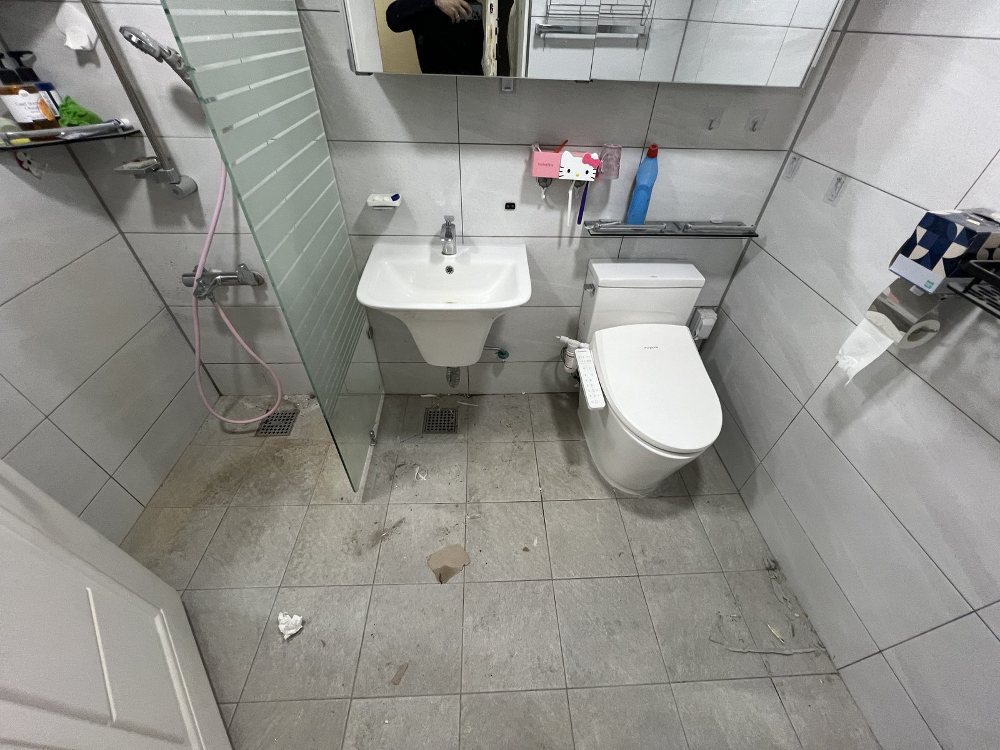
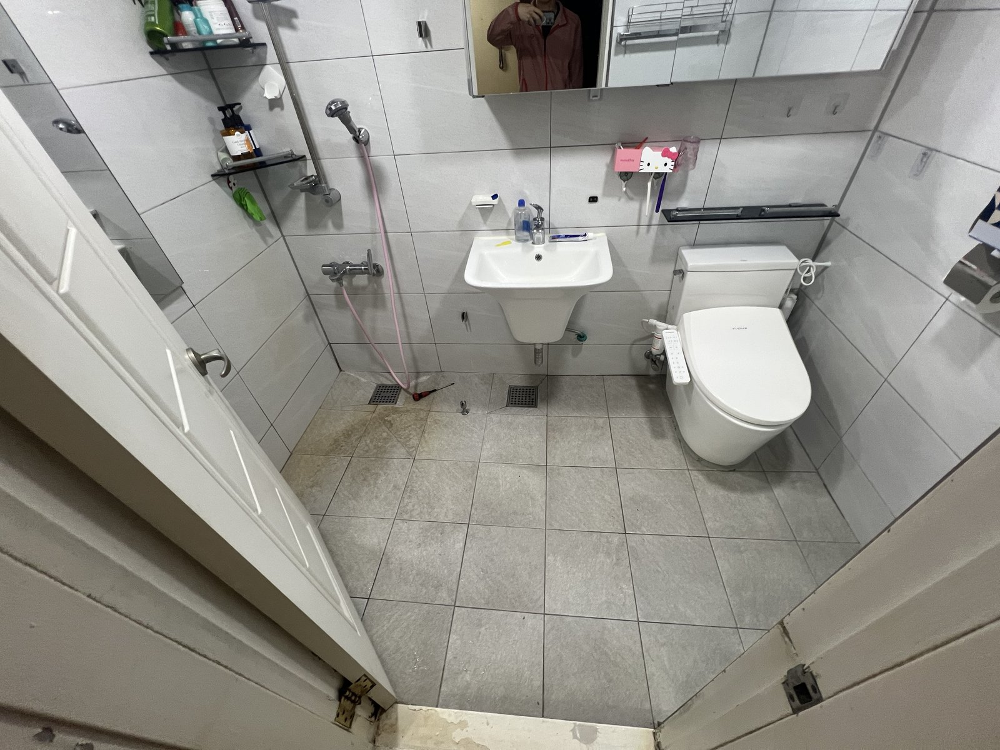
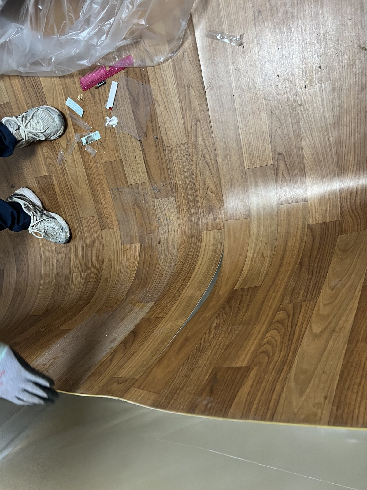
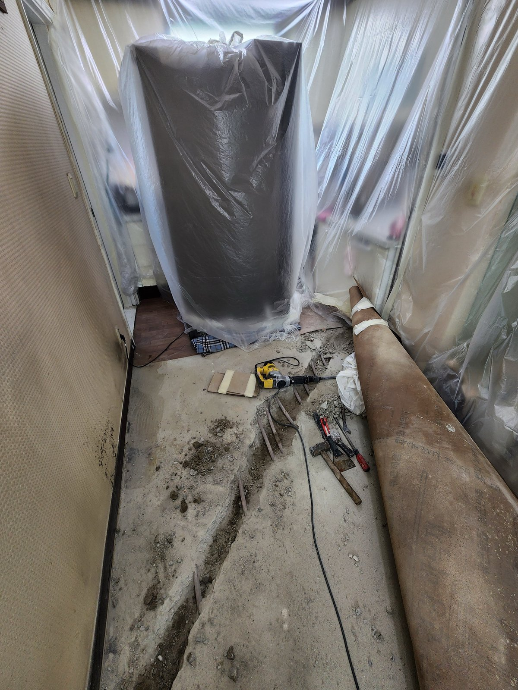
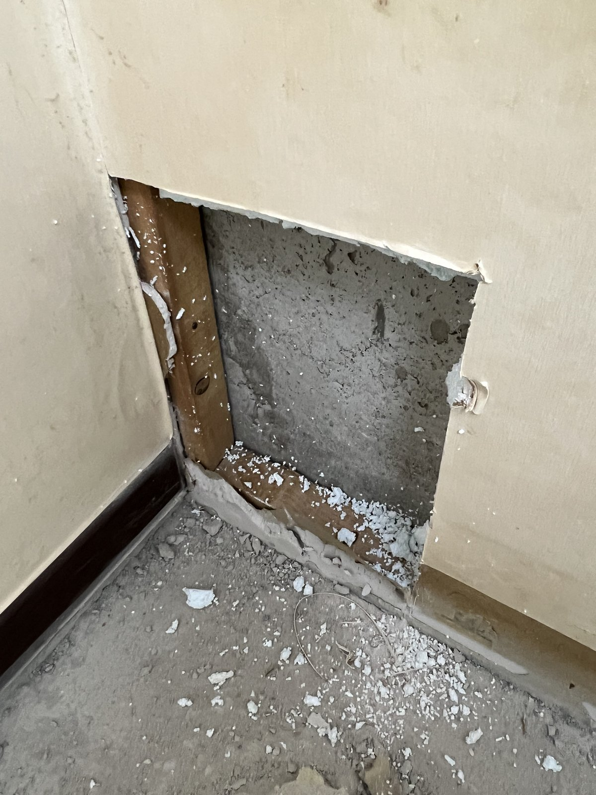
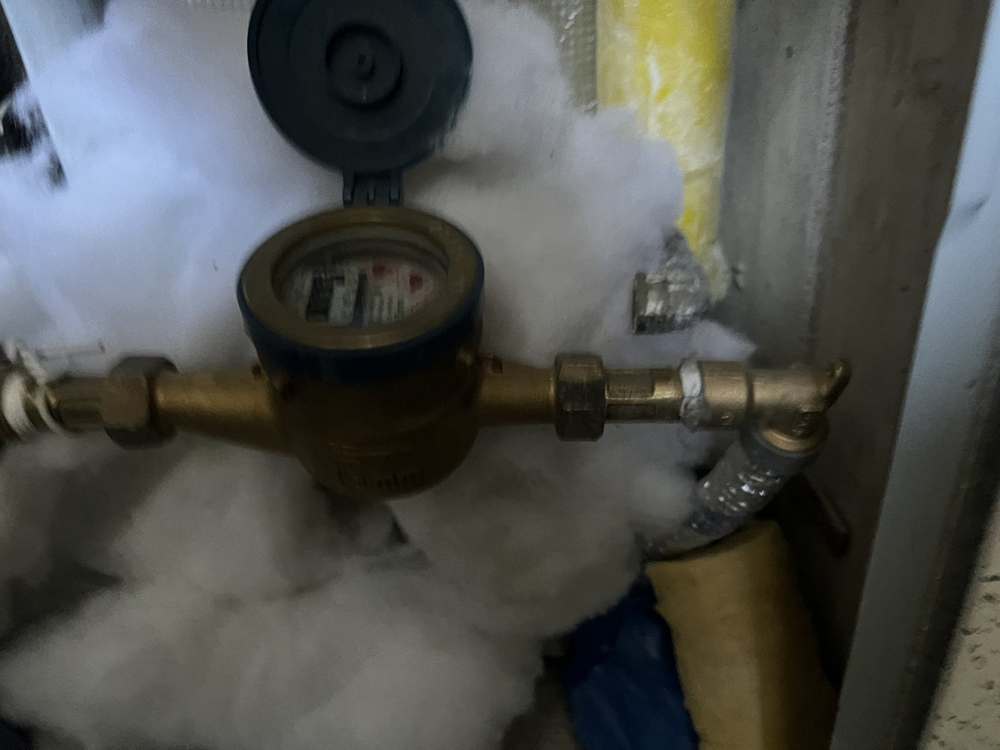
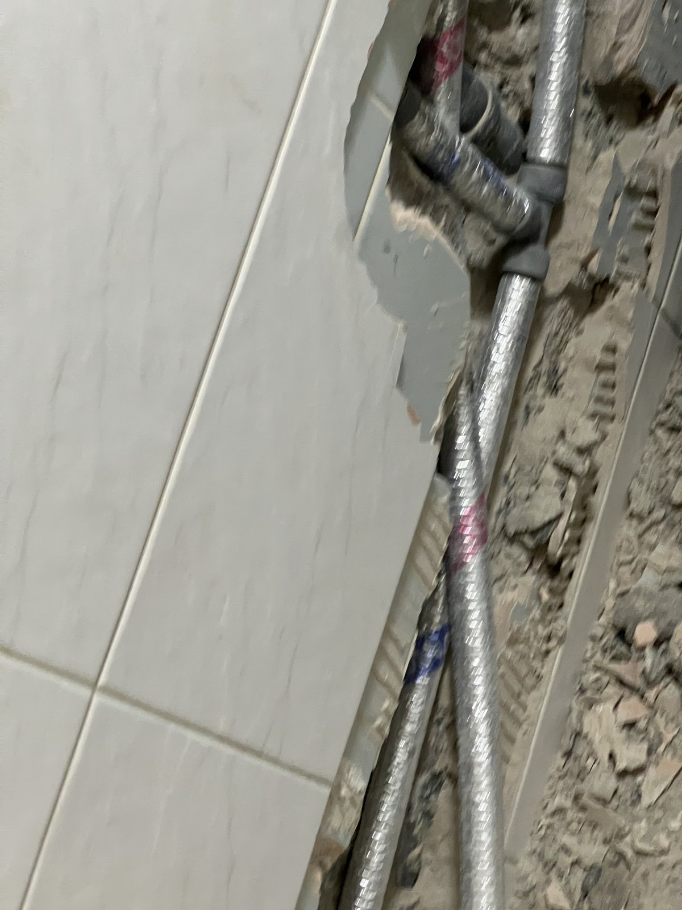
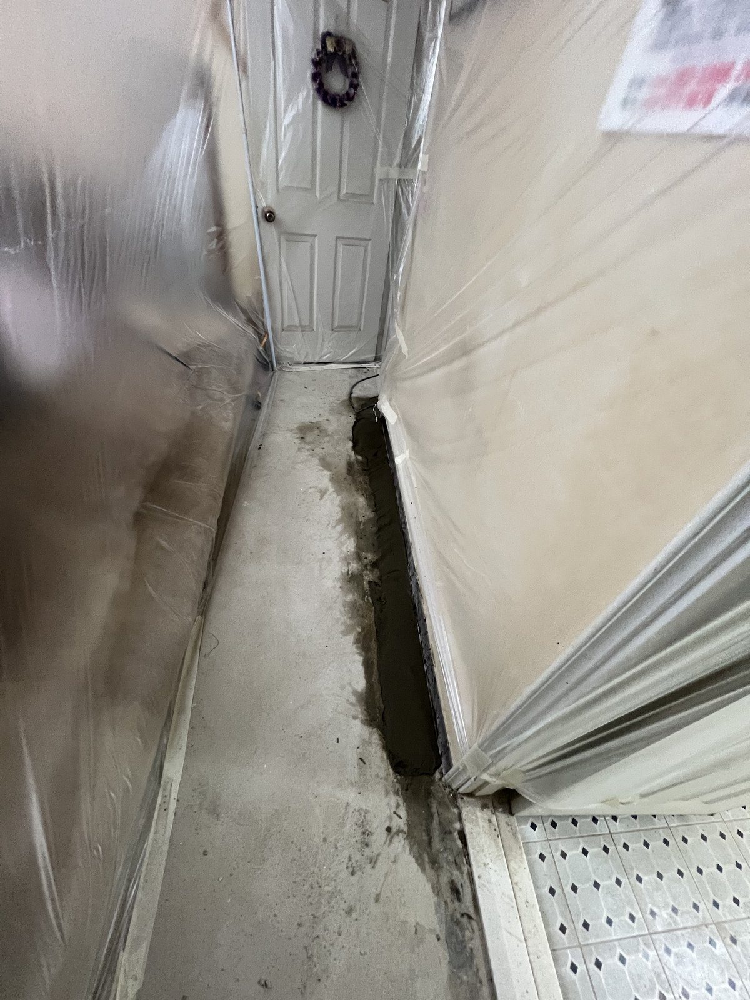
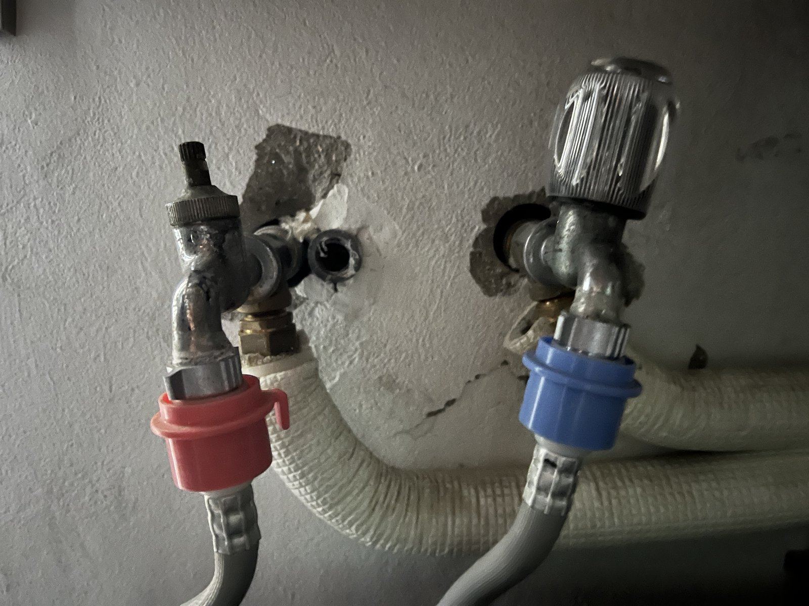
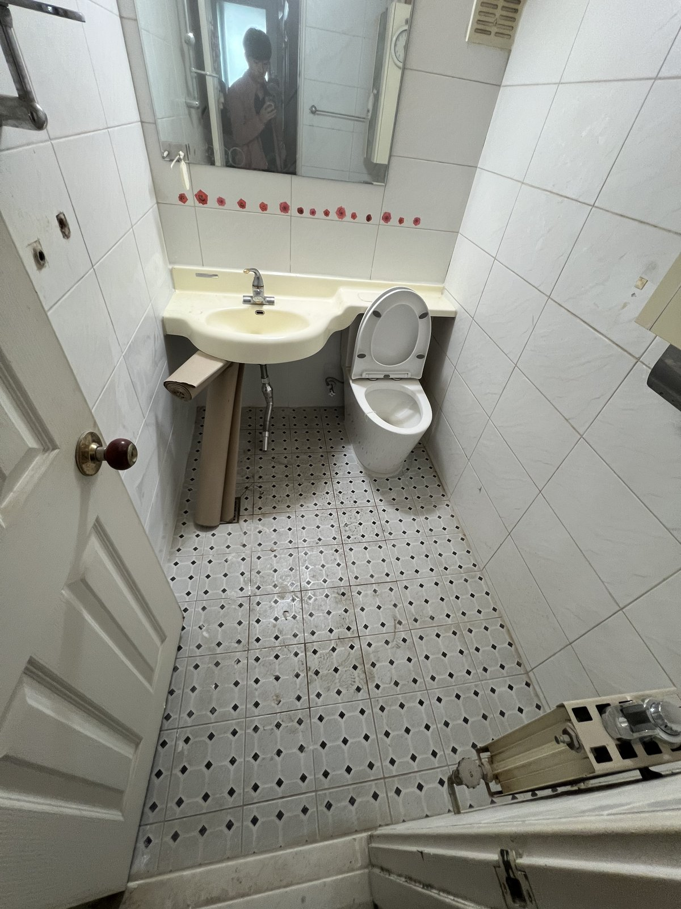

대전 용전동 아파트 수도배관 교체｜바닥·벽 배관 경로부터 욕실 기구 재설치까지

현장 작업 한눈에 보기
- 현장
- 대전 용전동 아파트 · 세대 수도배관
- 문제
- 세대 안 수도배관 라인 교체
욕실 기구·바닥재를 걷어야 하는 범위 - 작업
- 욕실 기구 분해·바닥 배관 홈·벽체 개구
새 배관 연결·홈 미장·욕실 기구 재설치 - 결과
- 기구 재설치와 바닥 홈 미장까지 사진 확인
수압시험 수치·바닥재 복구는 미기재
대전 동구 용전동 아파트 세대의 수도배관 교체 기록입니다. 욕실 기구를 떼어 내고 바닥과 벽에 새 배관 경로를 낸 뒤, 바닥 홈을 미장하고 세면대·양변기·수전을 다시 설치하기까지 10월 13·14·19일 사진 10장으로 소개합니다.
1. 작업 전 욕실
대전 동구 용전동 아파트 세대의 수도배관 교체 현장입니다. 10월 13일부터 19일까지 사흘 동안 남긴 사진을 순서대로 소개합니다.
첫 사진은 작업 첫날 아침의 욕실입니다. 세면대와 양변기, 샤워 공간이 그대로 있습니다. 배관을 새로 깔려면 이 기구들부터 떼어 내야 합니다.

2. 바닥재를 걷어 배관 지나갈 길 확보
거실·복도 쪽 바닥재를 들어 올려 아래 바닥면을 드러냈습니다. 새 배관이 지나갈 경로를 바닥에 내기 위한 준비입니다.

3. 보양 후 바닥에 배관 홈 내기
벽면을 비닐로 덮은 뒤 바닥을 따라 배관을 묻을 홈을 냈습니다. 필요한 경로만 따내야 나중에 다시 메울 범위도 줄어듭니다.

4. 벽 모서리를 열어 경로 확인
바닥에서 벽으로 올라가는 구간은 벽 모서리 마감을 사각으로 열어 배관 경로를 확인했습니다.

5. 둘째 날, 계량기 주변 연결부
10월 14일 오전에 남긴 계량기 주변 연결부입니다. 세대 수도는 이곳을 지나 집 안으로 들어가므로, 이음부 상태를 함께 기록했습니다.

6. 욕실 벽 안으로 새 배관
욕실 벽 타일을 따낸 홈을 따라 새 배관을 넣었습니다. 사진 속 은색 관이 벽 안쪽 경로를 따라 바닥 쪽으로 이어집니다.

7. 배관을 묻은 바닥 홈 미장
배관을 넣은 바닥 홈은 그날 저녁 몰탈로 메웠습니다. 둘째 날 작업은 밤까지 이어졌고, 바닥 홈과 연결부를 차례로 마무리했습니다.

8. 온수·냉수 밸브 연결
벽에서 나온 배관 끝에 빨강·파랑 표시의 밸브를 달고 연결 호스를 이었습니다.

9. 셋째 날, 욕실 기구 재설치
10월 19일에는 세면대와 양변기, 수전을 다시 설치했습니다. 첫 사진과 같은 방향에서 찍은 모습이라 작업 전후를 비교할 수 있습니다.
10. 다른 욕실도 기구 설치까지
다른 욕실도 같은 날 기구 설치를 마쳤습니다.

11. 확인한 범위와 상담 안내
이번 기록은 사흘 동안의 공정 사진으로 확인되는 범위입니다. 배관 교체를 결정한 원인, 수압시험 수치, 바닥재 복구 여부는 자료가 없어 적지 않았습니다.
수도배관 교체는 욕실 기구 분해부터 바닥·벽 철거, 미장, 기구 재설치까지 범위가 넓습니다. 상담 때 욕실 개수와 바닥재 종류, 계량기 위치를 함께 알려 주세요.